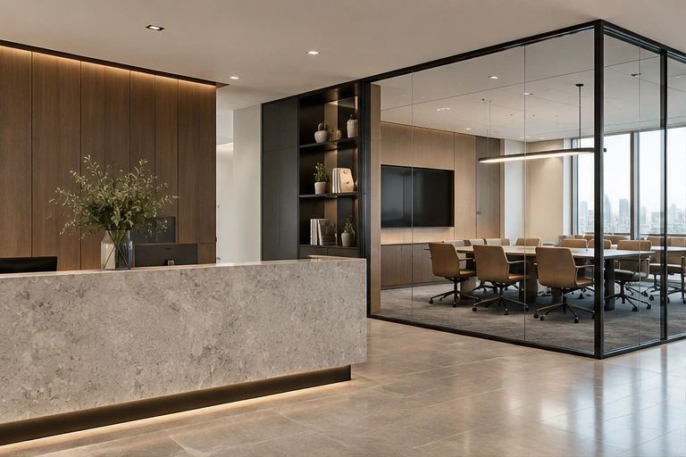

Corporate offices
Workplace surfaces communicate identity while supporting circulation, storage and maintenance.
- Positions
- Reception desks, meeting-room storage, door faces, partitions and wall panels.
- Priorities
- Wear at corners, frequent touch, acoustic design coordination and replaceable access panels.
- Detail strategy
- Locate seams away from high-impact edges where practical. Maintain access to power, data and ventilation.
- Project evidence
- Approve colour under office lighting and a sample assembly with the chosen substrate and adhesive.